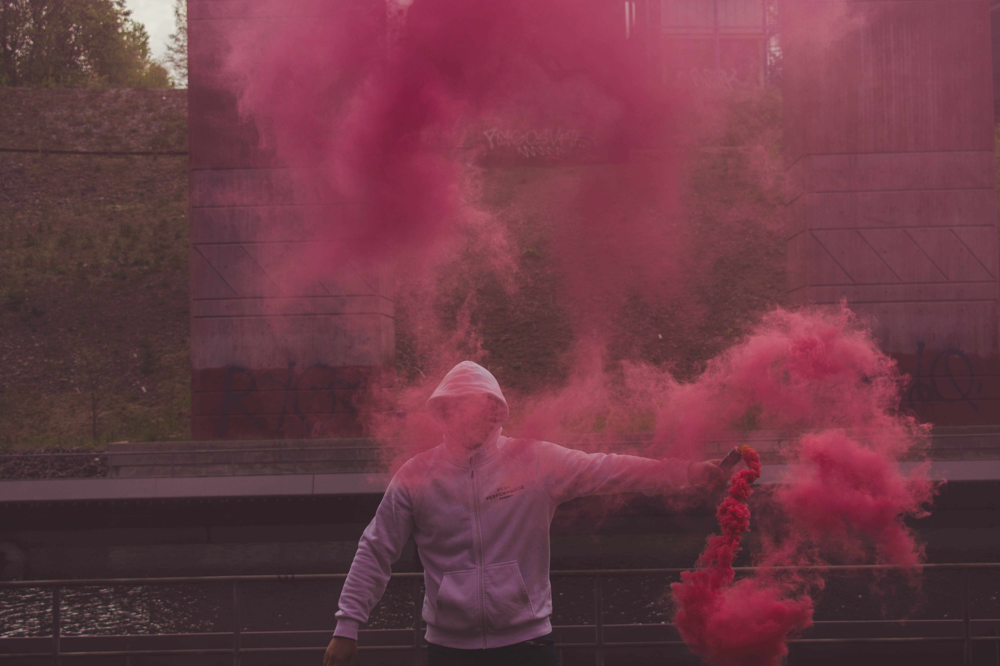

Pyro
Fick frågan av en vän om jag inte skulle kunna fotografera honom med pyro och sagt och gjort blev detta resultatet. Mitt mål med fotona var att ha min väns ansikte bakom röken för att skapa en hemlighetsful bild.

Fick frågan av en vän om jag inte skulle kunna fotografera honom med pyro och sagt och gjort blev detta resultatet. Mitt mål med fotona var att ha min väns ansikte bakom röken för att skapa en hemlighetsful bild.